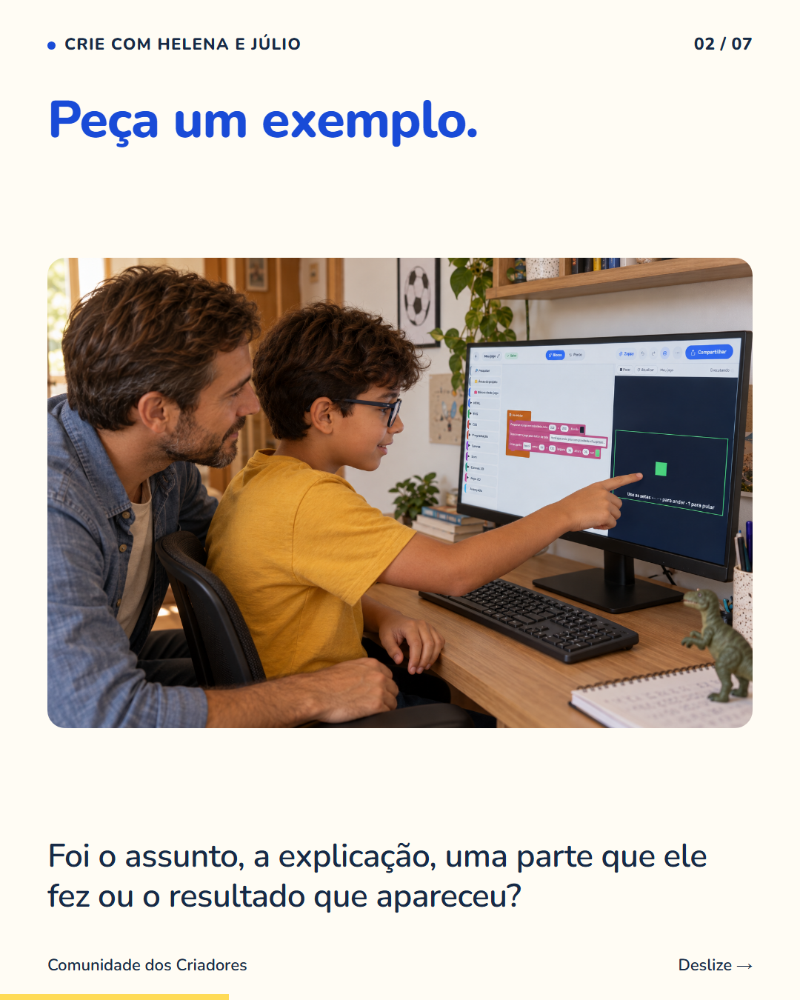
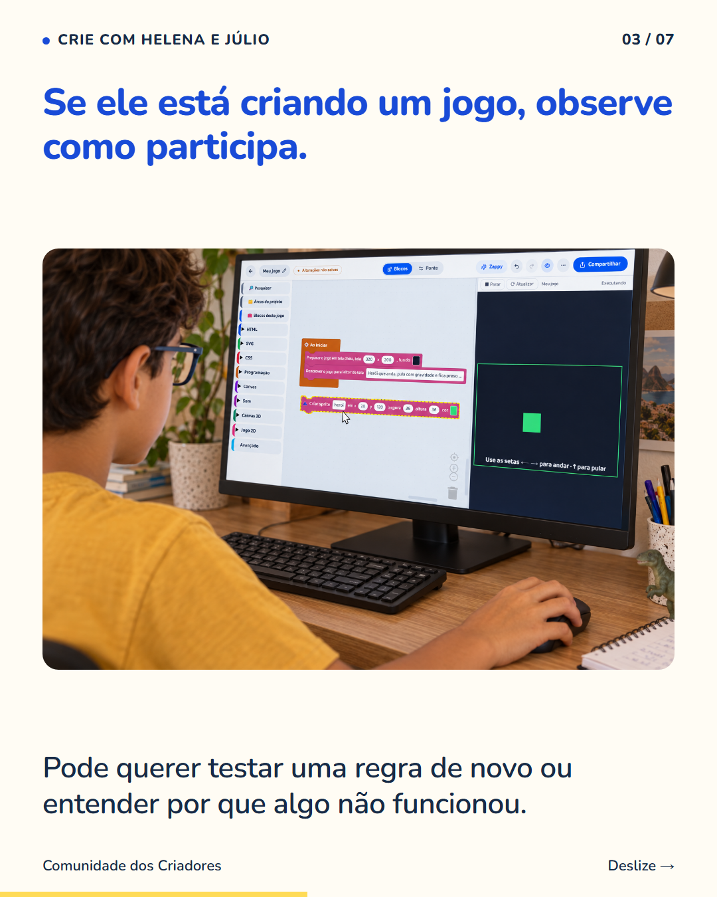
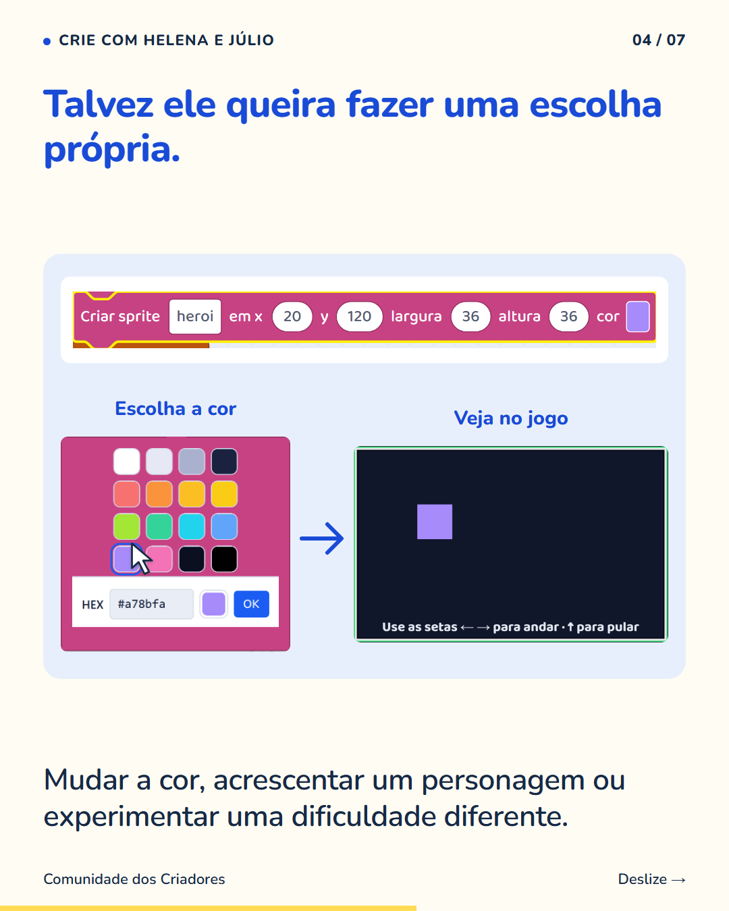
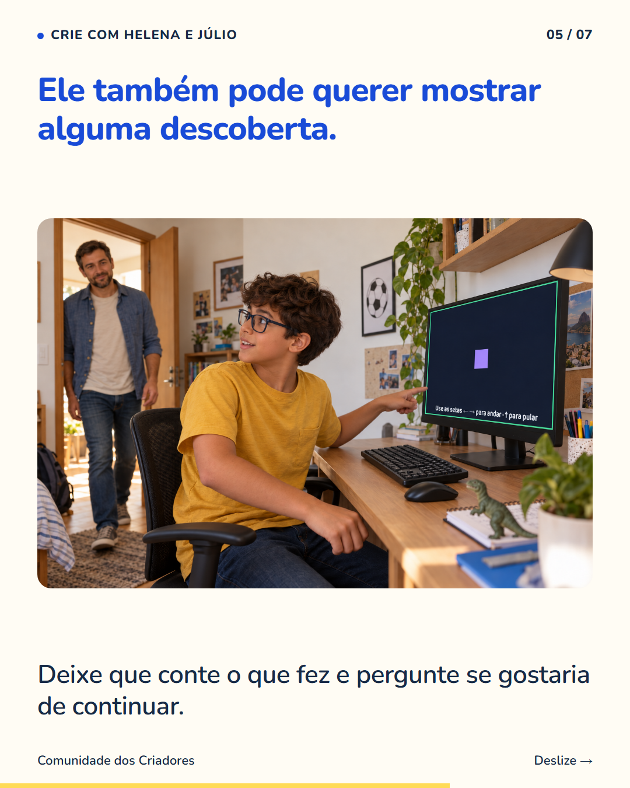
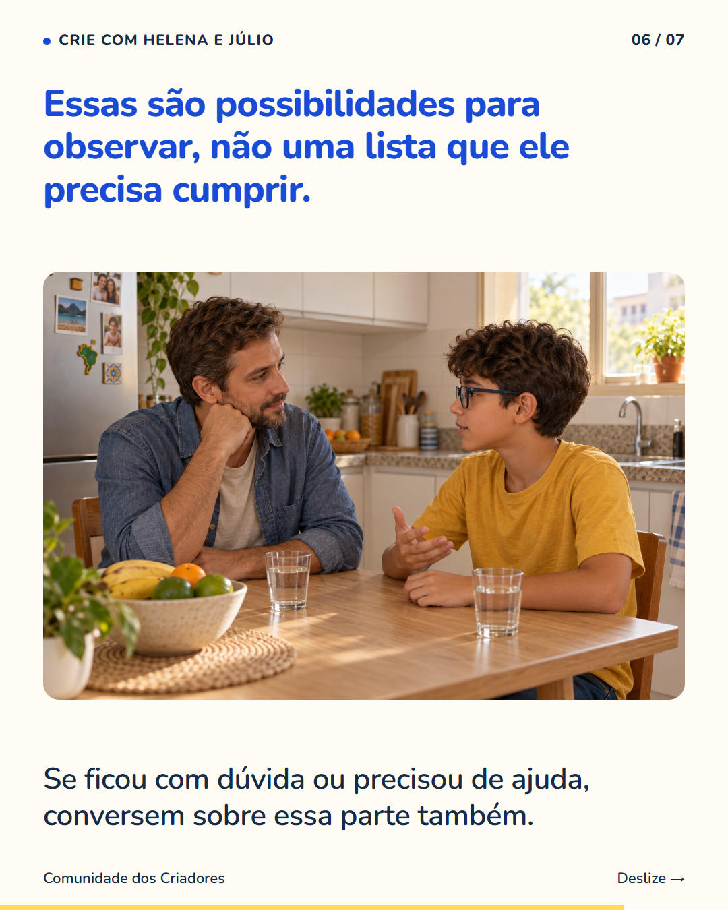
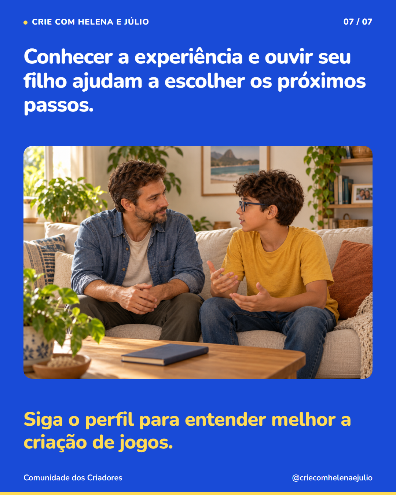

7 slides · 1080 × 1350 · Copy revisada · Ouvir a criança e conhecer a experiência






Quando seu filho diz que gostou de uma atividade, peça para ele contar uma parte que chamou atenção. Essa conversa ajuda a conhecer o interesse dele. Ao criar jogos, ele pode gostar de inventar o cenário, montar uma ação ou testar uma regra. Também pode ter gostado da ideia e encontrado dificuldade para acompanhar a explicação. Ouça as duas coisas. Uma primeira experiência traz informações, mas a criança não precisa demonstrar interesse de um único jeito. Pergunte se quer continuar e confira como a atividade oferece orientação. Siga o perfil para conhecer o que as crianças fazem ao aprender criando jogos.